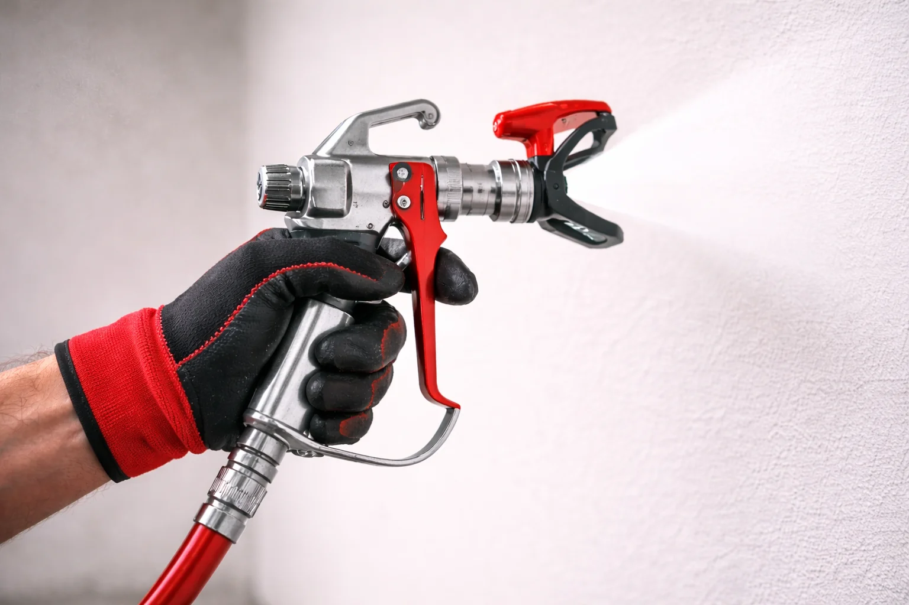

Материалы и технологии
Преимущества безвоздушной покраски
Безвоздушная покраска — передовой способ нанесения покрытия под сильным напором, который ускоряет процесс отделки в 5–10 раз относительно валика или кисти. Гладкий слой без изъянов и экономия краски на 30%.